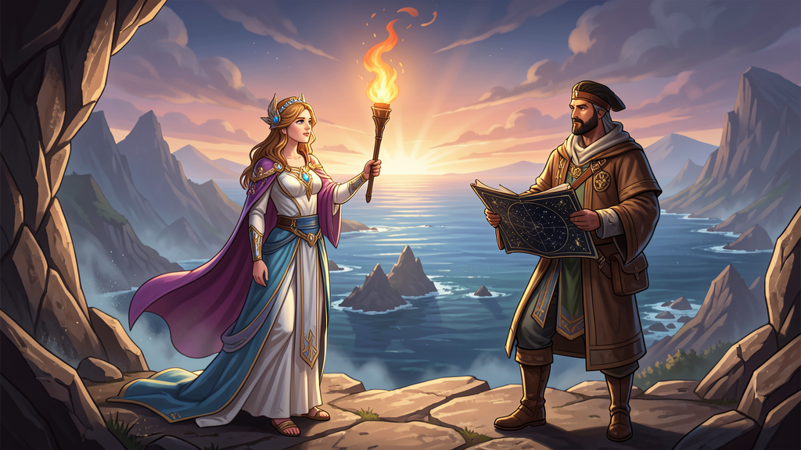

Historia y Leyenda
Mito fundacional — La Leyenda del Fuego y la Ola
En tiempos inmemoriales, los Pueblos de la Montaña y los Navegantes de la Costa vivían separados por un muro de nubes perpetuas en lo alto de la Sierra. No se conocían, no se comerciaban, no se hablaban.
La joven montañesa Lira de las Nieves descendió con una tea encendida para llevar el fuego a los valles. Allí conoció a Kael el Navegante, que le enseñó a leer las estrellas y los vientos. Juntos descubrieron el Paso de la Bruma, un puerto natural entre montaña y mar, y fundaron Valdoria («valle de luz»).
Desde entonces, Asteria recuerda que su fuerza nace de la unión de lo fiero (la montaña) y lo libre (el mar). Cada 12 de marzo, al amanecer, los ciudadanos repiten el juramento de Lira y Kael: «Ninguna nube separará lo que la luz unió».

Línea temporal
- ~1200 d.C.: primeros asentamientos en la Costa Dorada (registros orales de pescadores y pastores).
- ~700 d.C.: Cultura de la Cerámica Azul en el delta del Lumin: cerámica pintada con óxido de cobalto que se exportaba por el mar.
- 1523: Llegada de los primeros cartógrafos extranjeros; Asteria aparece en mapas europeos como «Tierra de la Luz».
- 1847: Pacto del Alba — nacimiento de la República de Asteria.
- 1922: Construcción del Canal de Centinela, uniendo el delta con la Costa Dorada.
- 1989: Transición a la democracia semipresidencialista actual sin rupturas violentas.
- 2025: Lanzamiento del proyecto Ciudad Cerebral en Valdoria, con 12 laboratorios de IA ética.